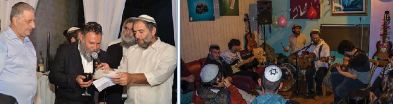

מי חיבר את הניגון, ומי קרא לו בשם כה מיוחד? מה לומדים מהניגון לגבי התקשרות לרבי?
מי חיבר את הניגון, ומי קרא לו בשם כה מיוחד? מה לומדים מהניגון לגבי התקשרות לרבי? כיצד הוא מאפיין את הדור השישי, וכיצד הוא קשור לדור השביעי? מדורנו הפעם מתחיל להתכונן ליו”ד שבט בניגון האהוב על אדמו”ר הריי”צ נ”ע
מי חיבר את הניגון, ומי קרא לו בשם כה מיוחד? מה לומדים מהניגון לגבי התקשרות לרבי? כיצד הוא מאפיין את הדור השישי, וכיצד הוא קשור לדור השביעי? מדורנו הפעם מתחיל להתכונן ליו”ד שבט בניגון האהוב על אדמו”ר הריי”צ נ”ע * הרה”ת לב לייבמן, מכון ‘נגינה לאור החסידות

לערב ‘משפיע’ בתהליך ההלחנה של ניגון
מספרים, שכאשר ר’ אהרן חריטונוב הלחין את הניגון, הוא התיישב על כך יחד עם החסיד ר’ אשר מניקולייב. לא שר’ אהרן חריטונוב היה צריך עזרתו בהלחנה, שכן הוא היה בעל כישרון עצום, אלא בגלל שר’ אשר היה “עלטערער חסיד”, חסיד מן הדור הקודם (מחסידי אדמו”ר המהר”ש ובצעירותו עוד הספיק להיות מחונך של ר’ הלל מפאריטש) כך שר’ אהרן רצה שהוא יכוון אותו בחוש החסידי שלו, בבחינת “וגדול עומד על גביו”.
עוד מספרים, כי באותה הפעם הניגון שיצא להם לא הניח את דעתו של ר’ אשר’, ולכן עזב ר’ אהרן את הניגון הזה הצידה ובינתיים הוא ירד מן הפרק.
כעבור זמן מה, נזכר ר’ אהרן בניגון והחליט שבכל זאת זהו ניגון טוב, והביא אותו (או שלח אותו על ידי אחר) לכ”ק אדמו”ר הריי”צ. הניגון אכן מצא חן בעיני אדמו”ר הריי”צ, שקרא אותו בשם “הבינוני”. (תודתי נתונה לרב שמריהו חריטונוב, שליח הרבי בבפולו, ארה”ב, על תיאור זה).
/span>
‘ציור פני הרב’ בשעת ההלחנה והניגון
החסיד ר’ זלמן דוכמן מספר בזכרונותיו: שמעתי מאדמו”ר (הריי”צ) זי”ע שבהיותו בלנינגרד דיבר פעמיים על אודות הניגון הזה. פעם אחת, כמדומה בי”ט כסלו תרפ”ז: “הרי אינני מנגן, אבי היה מנגן, אולם רואה אני שאהרן (חריטונוב), כשיצר את הניגון הזה, אם היה מצייר במחשבתו איך שהוא עומד ביחידות אצל אבא (אדמו”ר הרש”ב) - חסר כאן משהו…”. כוונת הדברים היא, שאז היה ר’ אהרן מחבר בבא נוספת לניגון. כן מובן גם בעדות נוספת מזכרונו של הרב שמריהו חריטונוב, שאדמו”ר הריי”צ התבטא (בתרגום חפשי): אילו הוא (מחבר הניגון) היה מעמיד את עצמו כפי שהוא עומד אצל האבא (אדמו”ר הרש”ב) ביחידות, הוא היה מרגיש [וממשיך להלחין] בבא נוספת.
מהתבטאות מיוחדת זו, הגם שנאמרה בלשון שלילה, עלינו להסיק את החיוב: כאשר חסיד מחבר ניגון, עליו לראות את עצמו כמו שהוא עומד בפני רבו. הפתגם אומר: “עומק חסיד - רבי”, כאשר החסיד יוצר ניגון, מעומקא דליבא, הניגון אמור לשאת לא רק את התכנים האישיים שלו - כמובן של עבודת השם ושל ההבנה שלו בחסידות - כי אם להעביר את הרבי בתוך הניגון.
הנה למדנו כאן פרק יסודי בהתקשרות לרבי אצל בעלי מנגנים.
כשבועיים לפני יו”ד שבט תשט”ו, הורה הרבי לנגן את ניגון הבינוני בתור הכנה ליו”ד שבט, והורה לצייר את פני הרב בשעת הניגון: “בעמדנו בהתוועדות דשבת מברכים חודש שבט - ינגנו עתה ניגון של כ”ק מו”ח אדמו”ר, ובשעת מעשה יצייר לעצמו כל אחד ואחד (כפי ששייך אצל רובם ככולם מהנמצאים כאן) מעמד ומצב שבו היה אצל כ”ק מו”ח אדמו”ר”…
הניגון ‘תובע’: מדוע אינך בינוני?
אדמו”ר הריי”צ קרא לניגון בתואר “הבינוני”, וביאר את התוכן והאמירה של הניגון. לפנינו מספר נוסחאות שמבטאות את אותה הנקודה:
בזכרונותיו של ר’ זלמן דוכמן מתאר: פעם אחת, במוצאי יום הכפורים תרפ”ח, ניגנו את הניגון, ולאחר הניגון אמר אדמו”ר (הריי”צ) זי”ע: “זהו ניגון של בינוני, מהו בינוני - הנך יודע, אז מדוע אינך כזה?…”
על ר’ לייזר ננס מסופר שחיבב ביותר את ניגון הבינוני. הוא סיפר שבעצמו היה נוכח בעת שניגנו ניגון זה אצל אדמו”ר הריי”צ, ובעת שהגיעו לתנועה מסוימת בניגון הבינוני, אמר הרבי הריי”צ על כך: “דו קענס דאך זיין א בינוני, איז פארוואס ביסטו נישט?!” (הרי אתה יכול להיות בינוני, אז מדוע אינך כזה?!)
נראה בעליל, שאמירה זו היא–היא משמעות הניגון. זאת אומרת, נוסף לכך שהניגון מתאר ומצייר לנו מה הוא הבינוני, שזה בעצם ידוע וברור לכל חסיד, וגם ידוע שכל אחד יכול להיות כזה, אז הניגון שואל ותובע בהדגשה: “ובכן, מדוע אינך כזה”.
היה זה ביום טוב ראשון של פסח תש”ח בסעודת היום, ציוה אדמו”ר הריי”צ לנגן את “הבינוני”, אולם המסובים לא יכלו להיזכר כיצד מתחיל הניגון. נענה על כך אדמו”ר הריי”צ: כאשר לא לומדים חסידות .. ולא עוסקים בעבודה של בירור ותיקון המידות, אז באמת קשה ובאמת בלתי אפשרי להיות ‘בינוני’, אבל לנגן ה’בינוני’ - זה לא אמור להיות קשה.
תנועה של העמקה
סיפר ר’ יצחק דוד גרונר ע”ה: בהתוועדויות של אדמו”ר הריי”צ, בשעה שהקהל היה מנגן ניגון, אדמו”ר הריי”צ היה נוהג להניע ראשו הקדוש לפי קצב ותוכן הניגון. בעיקר אני זוכר בניגון “הבינוני”, כאשר בחלקו השני של הניגון (היינו בתנועה של “העמקה”) היה עושה בראשו תנועה לפי קצב הניגון.
באחרון של פסח תש”ב אמר אדמו”ר הריי”צ, שבכדי לקיים את מאמר רז”ל “הלוואי שיתפלל אדם כל היום”, מנגנים ניגון שהתפללו בו וזה “כאילו התפלל”. על כן ינגנו כעת ניגון שמתפללים בו, וציוה לנגן את ניגון “הבינוני”.
ביו”ד שבט תשי”ב ותשי”ג, השנים הראשונות לנשיאות הרבי, ניגון ‘הבינוני’ פתח את ההתוועדות של הרבי. בראש השנה ושמחת תורה תשי”ג, הרבי הורה לנגן את ניגון הבינוני בתור ניגון הכנה לניגון ארבע בבות (היה זה בטרם נקבע לד’ בבות ניגון הכנה קבוע).
“שחריטונוב יסכים לנגן…”
בחג השבועות תשי”ח צוה הרבי לנגן את ניגון הבינוני. כאשר הקהל גמרו לנגנו, החל ר’ שמשון חריטונוב, שעמד על ספסל בקצה השלוחנות מול הרבי, לנגן ניגון זה שוב בעצמו, (בהיותו אחיין של מחבר הניגון, היו לו אי–אלו שינויים בנוסח הניגון מכפי שרגילים לנגן). הקהל כולו החריש והרבי הקשיב בקשב רב לניגונו. כשסיים לנגן אמר הרבי בחיוך: “שחריטונוב יסכים לנגן - זה רק בזמן מתן תורתינו. יעזור השי”ת שיהיה זה התחלה טובה על כל השנים כולן” (ידוע שר’ שמשון חריטונוב ז”ל היה איש הצנע לכת ולא הבליט את עצמו מעולם).
את הנוסח של ניגון הבינוני, קיבל ר’ שמשון מבן דודו ר’ מרדכי צבי (ר’ מרדכי הירש), הבן של ר’ אהרן חריטונוב מחבר הניגון.
ואכן בתקליט ניח”ח (#13, שיצא לאור לקראת י”ב תמוז תשל”ז), את הבבא השלישית של ניגון הבינוני מנגן ר’ שמשון חריטונוב בכבודו ובעצמו, וגם שתי הבבות הראשונות שמנגן ר’ הערשל גאנזבורג - מדוייקות לפי גרסתו של הרב חריטונוב. יש לציין כי במשפחות הצאצאים של ר’ אהרן חריטונוב, מקובל לנגן את ניגון “הבינוני” בכל חתונה עד עצם היום הזה.
בין ניגון של צדיקים לניגון של בינונים
במפתח הניגונים שבספר הניגונים רשם ר’ שמואל זלמנוב, מחבר הספר: “תנועות הניגון הזה הן מיוחדות במינן, אין בהן כל כך מיופי חוקי הנגינה הרגילה, אבל ספוגות וממולאות הינן רגשות הלב וביטוי הנפש, עד בלי גבול”.
ברצוני להתייחס להתבטאות “אין בניגון כל כך מיופי חוקי הנגינה הרגילה”. בהשקפה ראשונה, תמוה ביותר להתבטא כך אודות ניגון כה מכובד, ומה עוד שהיה חביב על אדמו”ר הריי”צ.
אולם ייתכן כי דווקא במילים אלו טמונה הייחודיות של הניגון, שכולו מבטא את ה”בינוני”. מי זה הבינוני? לעומת הצדיק, שכבר ניצח את היצר, ועבודתו היא במנוחה ותענוג, אהבה בתענוגים, הקצה השני זהו הבינוני שכולו רצוף מלחמות. ולכן הניגון שמבטא את הבינוני, זהו בדוקא ניגון שנפקד ממנו ה”יופי המוזיקלי” הרגיל.
הרוח שנרגשת מאד לאורך כל הניגון, היא העקשנות, לא להיכנע בשום תנאים; תנועה של מסירות נפש. תנועה זו אופיינית מאד לבינוני - שלעולם איננו נכנע ליצר. אפשר לומר שהיא גם אופיינית מאד לדורו של אדמו”ר הריי”צ, דור ספוג במסירות נפש של ברזל.
הקשר של ניגון הבינוני לגאולה
בליל שמחת תורה תשמ”ט, בקשר לסדר ניגוני כל האדמו”רים, הרבי התייחס לניגון הבינוני בהקשר להכנה לגאולה: “ויש להעיר בנוגע לניגון של כ”ק מו”ח אדמו”ר - שנקרא על ידו ‘הבינוני’ - שקשור עם ביאת משיח צדקנו, כי, “מעשינו ועבודתינו” המביאים את הגאולה (החל מפסק דין הרמב”ם שעל ידי מצווה אחת ‘הכריע את עצמו ואת כל העולם כולו לכף זכות וגרם לו ולהם תשועה והצלה’) שייכים ברובם (התורה על הרוב תדבר) לעבודת הבינוני, שהיא ‘מדת כל אדם ואחריה כל אדם ימשוך’, משא”כ עבודת הצדיקים שהם מועטים כו’”.
על יסוד דברים אלו של הרבי מובן, שהיות ומדת הבינוני היא מדת כל אדם, ממילא ניגון הבינוני שייך לכל אחד! הניגון מעורר אותנו לשאוף לעבודת הבינוני, לסיים את כל “מעשינו ועבודתינו” כראוי; והרי אפילו במעשה אחד או דיבור אחד או מחשבה אחת, יהודי יכול להכריע את כל העולם כולו ולהביא את הגאולה, תיכף ומיד ממש, אמן!